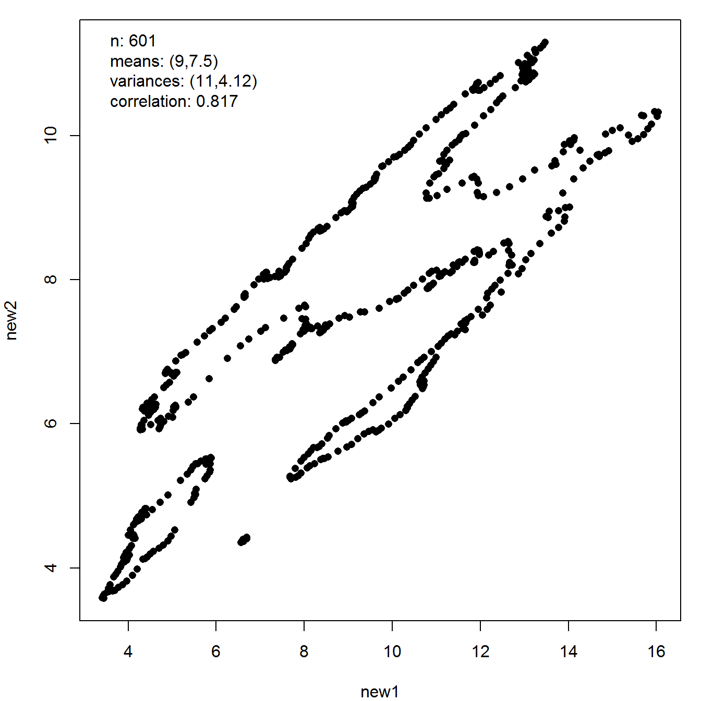

vignettes/intro-to-anscombiser.Rmd
intro-to-anscombiser.RmdThe anscombiser package is named after the famous Anscombe’s quartet datasets (Anscombe (1973)). Frank Anscombe created these datasets to emphasize the importance of graphical techniques in statistical analyses. The datasets each consist of 11 pairs of \((x, y)\) points and they have almost exactly the same values of an apparently remarkable number of sample summary statistics. However, scatter plots of these data reveal that the behaviours exhibited in these datasets are very different. That inspecting summary statistics can give a very misleading impression of a dataset is an important point for students of Statistics to appreciate.
The datasauRus package (Locke and D’Agostino McGowan (2018)) provides further examples of datasets that have markedly different scatter plots but nevertheless share many sample summary statistics. These datasets were produced by using a simulated annealing algorithm that seeks to morph incrementally an initial dataset towards a target shape while maintaining the same sample summary statistics (Matejka and Fitzmaurice (2017)). In principle, any set of summary statistics can be used. Indeed, Locke and D’Agostino McGowan (2018) provides not only dataset that have the same values of Anscombe’s statistics (essentially sample means, variances and correlation) but also datasets that are constrained to share the same sample median, interquartile range and Spearman’s correlation.
The anscombiser package takes a simpler and quicker approach to the same problem, using Anscombe’s statistics. It uses shifting, scaling and rotating to transform the observations in an input dataset to achieve a target set of Anscombe’s statistics. These statistics can be set directly or by calculating them from a target dataset, perhaps one of the Anscombe quartet. If the input dataset has statistics that are similar to the target statistics then the output dataset will look rather similar to the input dataset. Otherwise, the output dataset will be a squashed and/or rotated version of the input dataset, but the general shape of the input dataset will still be visible. It will be like viewing the input dataset from a different perspective.
Thus, we can easily create many datasets that have different general natures but share the same values of Anscombe’s statistics. In addition, this method works in more than two dimensions.
library(anscombiser)
The anscombise() function takes an input two-dimensional dataset and outputs a dataset that shares Anscombe’s statistics with his quartet of datasets. The which argument chooses which of Anscombe’s datasets to use. Of course, this affects the output dataset only minimally but it matters if we want to plot the input dataset, as we do below.
new_faithful <- anscombise(datasets::faithful, which = 4) plot(new_faithful)
plot(new_faithful, input = TRUE)
If we view a plot of the outline of the coast of Italy from a strange angle then the resulting dataset has the same sample summary statistics as those above.
italy <- mapdata("Italy") new_italy <- anscombise(italy, which = 4) plot(new_italy)

The mimic() function of the anscombiser package transforms an input dataset, as outlined above, to mimic another dataset, in the sense of replicating its values of Anscombe’s statistics. A particularly effective feature of the datasauRus package is a dataset that draws a picture of a dinosaur. Here, we show that a plot of the outline of the coast of the UK needs little adjustment to replicate the sample summary statistics of the dinosaur dataset.
library(datasauRus) library(maps) dino <- datasaurus_dozen_wide[, c("dino_x", "dino_y")] UK <- mapdata("UK") new_UK <- mimic(UK, dino) plot(new_UK, legend_args = list(x = "right"))
We finish this section with another example involving the dinosaur.
The final image was created by Accentaur from the Noun Project.
We conclude with a brief 3D example, using the randu and trees datasets in the datasets package.
new_randu <- mimic(datasets::randu, datasets::trees) # new_randu and trees share the same sample summary statistics new_randu_stats <- get_stats(new_randu) trees_stats <- get_stats(datasets::trees) # For example trees_stats$correlation #> Girth Height Volume #> Girth 1.0000000 0.5192801 0.9671194 #> Height 0.5192801 1.0000000 0.5982497 #> Volume 0.9671194 0.5982497 1.0000000 new_randu_stats$correlation #> new1 new2 new3 #> new1 1.0000000 0.5192801 0.9671194 #> new2 0.5192801 1.0000000 0.5982497 #> new3 0.9671194 0.5982497 1.0000000 pairs(trees)
pairs(new_randu)
It is well-known that in three-dimensional displays of the randu data non-random structure is evident, but this isn’t evident in these pairwise displays.
Anscombe, F. J. 1973. “Graphs in Statistical Analysis.” The American Statistician 27 (1): 17–21. https://doi.org/10.1080/00031305.1973.10478966.
Locke, Steph, and Lucy D’Agostino McGowan. 2018. DatasauRus: Datasets from the Datasaurus Dozen. https://CRAN.R-project.org/package=datasauRus.
Matejka, Justin, and George Fitzmaurice. 2017. “Same Stats, Different Graphs: Generating Datasets with Varied Appearance and Identical Statistics Through Simulated Annealing.” https://www.autodesk.com/research/publications/same-stats-different-graphs.